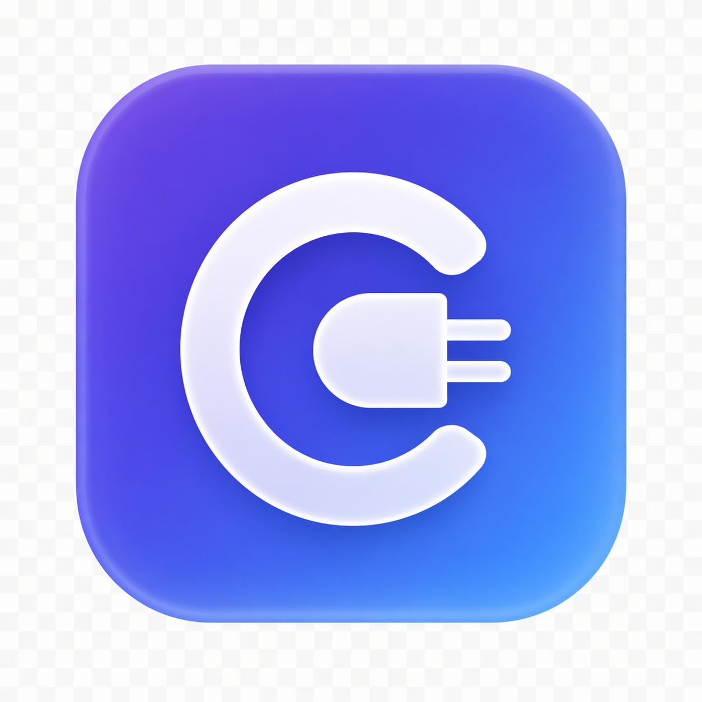

Desktop 状态
未配置

CC Desktop Switch添加新的 API 提供商或选择预设
管理已配置的 API 提供商
为每个提供商配置模型别名
Desktop 发送 claude-sonnet-4-6 等模型别名，本地代理会映射到你选择的提供商模型。
将配置写入 Claude Desktop
关闭并重新打开 Claude Desktop
在设置中选择 Cowork on 3P
监控并控制本地代理
监听 localhost
全局偏好和应用信息
按下面 4 步完成 Desktop 3P 接入。
选择预设或手动填写 API Base URL 和 API Key。
写入 inferenceProvider、gateway 地址和模型列表。
确认本地端口可用，并观察请求日志。
重启后选择 3P 模式开始使用。